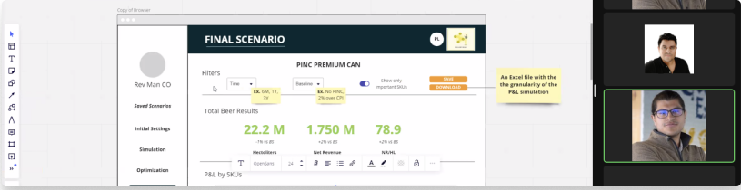
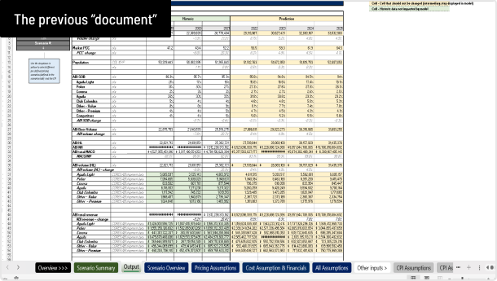
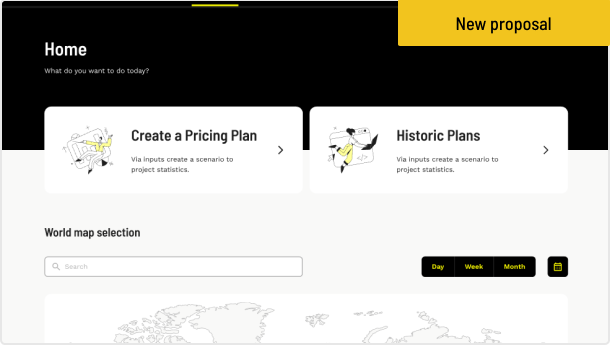
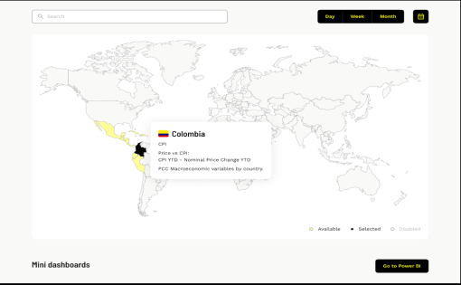
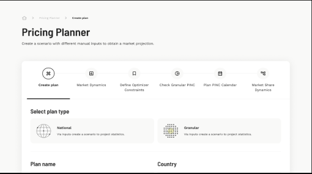
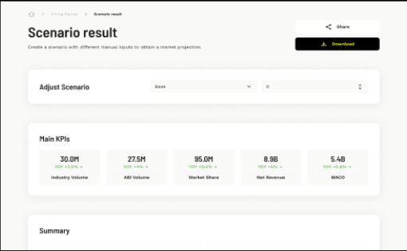
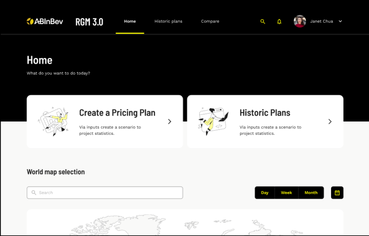
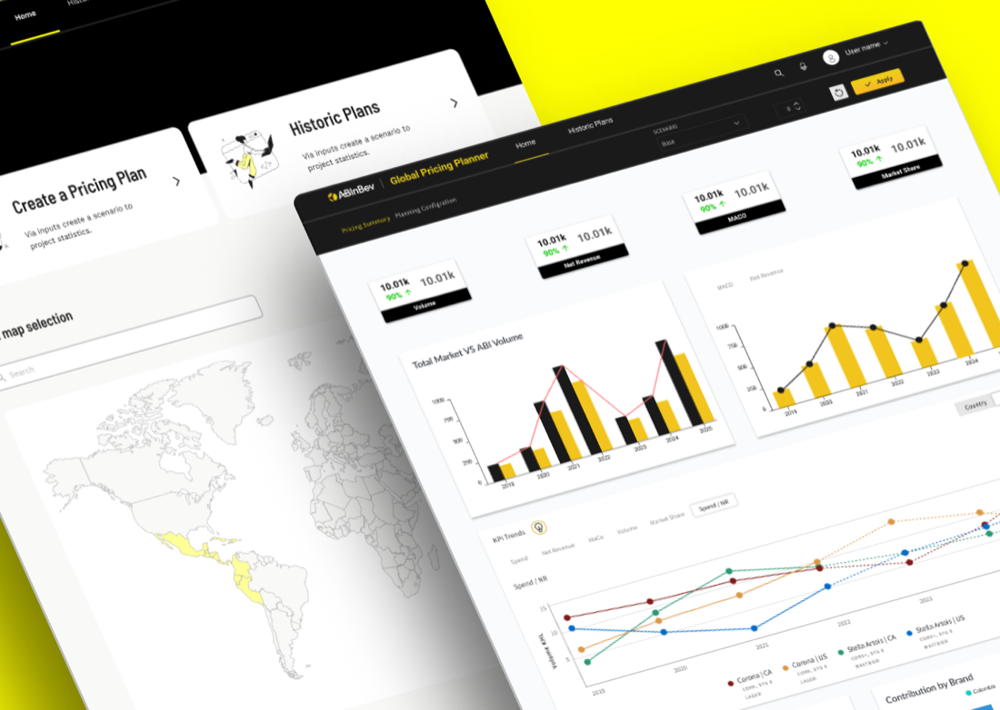

RGM 3.0, a pricing and sales projection platform that replaced an Excel file full of macros, so ABInBev teams can simulate how each beer brand performs across Latin America.
From research to final screens
Struggled with key tasks in the old system
Saw the old system as a productivity barrier
Felt frustrated by the macro-based tool
Projections lived in an Excel spreadsheet with macros: many fields, little clarity, and a poor experience.
Design thinking with two testing rounds, plus three weekly meetings with the ABInBev team.
A web platform split into plan creation and history, with a step-by-step planner and clear results.
Empathize
GoalUnderstand why the Excel tool was so hard to use.
- Observations and interviews with the teams who build projections every day.
- Found that the macro-based system was suboptimal, unclear, and complex to operate.
- Turned findings into three solutions for the new platform.
A simpler interface
Clear and intuitive, to reduce errors, validated through usability testing.
Projection generation
Easy, accurate sales projections across regions.
Data visualization
Custom views to analyze data with specific criteria.
Define
GoalDesign for specialized teams and country-level executives in Latin America.
- Pain
- Slow, error-prone Excel projections; hard to track brands across countries.
- Goal
- A simple projection tool, real-time data, and easy sharing with regional managers.
- Pain
- No standard tool; manual data aggregation; no clear visualizations.
- Goal
- Automated aggregation and clear charts for data-driven decisions.
Ideate
GoalCo-create with the ABInBev team and turn a spreadsheet into a guided flow.
- Three weekly meetings to track progress and communicate with the ABInBev team.
- Creative sessions to draft wireframes together.
- Architecture review with developers on the stack and integrations.

Before & after
GoalKeep the brand, but trade dozens of spreadsheet fields for two clear paths.

- Numerous fields to fill in each form to run a projection.

- Two core paths, plan creation and history, guided by instructions and support content.
Final screens
GoalLet directors and executives focus on decisions, not spreadsheets.
Pricing plans by zone
Pick a country on the map and plan for it.

Seamless projections
A step-by-step planner from plan type to results.

Effortless data handling
Analyze, download, or share each scenario.

Real-time analytics
Connected to Power BI, and scenarios can be compared.

From spreadsheet to platform
OutcomeProjections became a guided process, with results executives can read, share, and compare.
Two clear paths
Plan creation and history replace a maze of spreadsheet tabs.
Six guided steps
Instructions and support content at every stage.
KPIs up front
Volume, market share, revenue, and MACO at a glance.
